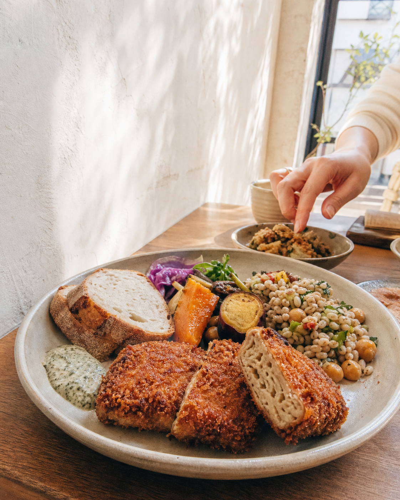

現場を知る書き手
飲食業界歴25年以上。数字だけでは見えない、お客様と店側の両方の温度から書きます。
Food-focused Web Writing & LP Design
飲食業界歴25年以上・最大35店舗を統括した現場目線で、
「お客様が来店を決める理由」からLPと文章をつくります。

PLANT-BASED / DAY VEGAN / FRANCHISE
VEGAN / FRANCHISE食べたくなる、から逆算する。
CONCEPT TO RESERVATION焼き台の熱と手仕事から、予約したくなる夜を設計。
健康訴求より先に、食べたい気持ちと滞在時間を伝える。
In production既存ブランドを守りながら、新しい一杯を自然に追加。
Concept workは構成・コピー・デザインを提示する試作です。MERCY案件は提案・制作段階を含みます。写真は方向確認用で、公開時は実店舗撮影への差し替えを前提とします。
飲食業界歴25年以上。数字だけでは見えない、お客様と店側の両方の温度から書きます。
写真映えだけで終わらせず、予約・来店・登録までの心理の順番を組みます。
制作速度は上げても、食材・言葉・ブランドの違和感は人の目で削ります。
佐藤 明宏｜OOKINI.com 代表
飲食業界歴25年以上。「牛角」「かつや」「まいどおおきに食堂」などの出店・立地診断を責任者として担当後、ゴーストレストラン業態で西日本最大35店舗を統括するエリアマネージャーを経験。出店から数値管理まで知る立場で、「おいしい」だけでは伝わらない——そんな店舗にとって最適な言葉と画面を組み立てます。
飲食店のLP・記事のご相談。まずはDMからお気軽にどうぞ。